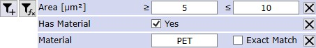
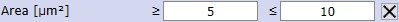
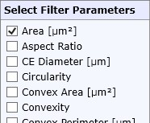
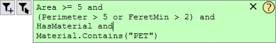
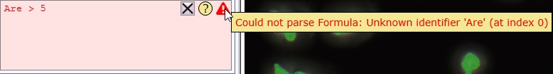
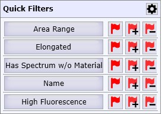
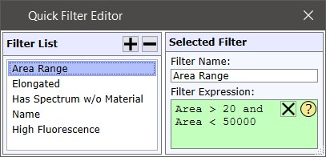

|
过滤表达式编辑器
|
过滤表达式编辑器允许在 创建颗粒列表 前过滤颗粒，或
在 颗粒管理器中隐藏或选择某些颗粒。
可视化过滤编辑器


在此处您可以为所选参数（例如，面积）定义值范围。
按 从列表中删除过滤器。
通过选择颗粒参数添加过滤器参数：

在简单参数列表和自定义公式编辑器之间切换，见下文。
自定义公式编辑器

允许您定义一个自定义布尔公式来定义过滤条件。
点击黄色问号以查看所有可能的变量和一些示例。
要清除公式，按 X。
如果存在错误，您可以将鼠标悬停或点击红色感叹号以查看问题所在：

示例公式
|
Area > 5 |
大于条件 |
|
Area > 5 and Area < 10 |
使用 AND 组合 |
|
(Area > 10 and Area < 20) or (Area > 50 and Area < 70) |
使用括号组合 AND 和 OR |
|
Material = "Quartz" |
字符串比较 |
|
Material.Contains("Quar") |
字符串方法调用 "Contains" |
|
FeretMin > 3 * FeretMax |
带乘法的比较条件 |
|
RandomValue > 0.5 |
随机选择一半元素
|
|
IsOversaturated |
仅显示具有过饱和光谱的颗粒 |
|
!IsOversaturated |
NOT 运算符 "!"：仅显示没有过饱和光谱的颗粒 |
|
Math.Sqrt(Length * Width) > 5 |
计算 Length * Width 的平方根并与大于 5 比较。 |
请参阅 .NET Framework 4.7.1 文档了解其他 Math 或 String 方法。
快速过滤器
您可以定义快速过滤器，以便通过单击鼠标调出自定义公式。

点击所需的快速过滤器，在过滤表达式编辑器中使用已保存的公式。
在颗粒管理器中：点击所需的快速过滤器勾选标记以添加/删除颗粒标记。
配置快速过滤器

在此处您可以添加、删除或编辑快速过滤器。
只需添加一个新过滤器并设置名称和公式。
在此处您可以在可视化过滤编辑器和自定义公式编辑器之间进行选择。